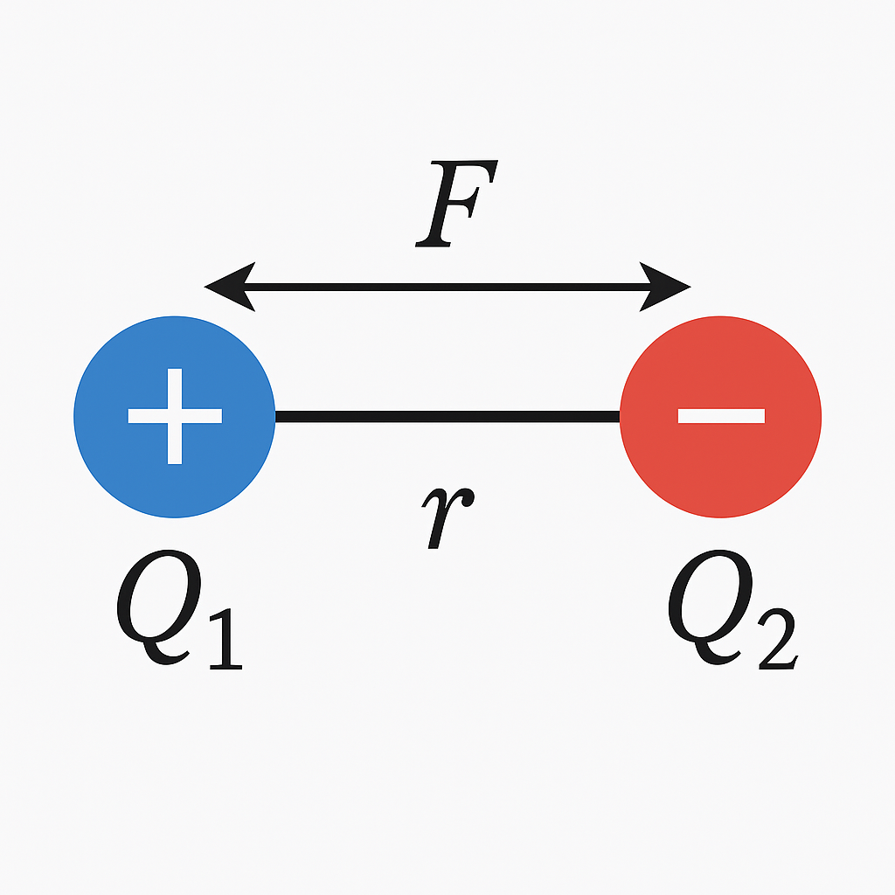

Ladung, Strom, Spannung
1. Elektrizität und Ladung¶
Was ist Elektrizität?¶
Elektrizität ist eine fundamentale Erscheinung der Physik – sie umfasst sowohl ruhende als auch bewegte elektrische Ladungen.
Dazu gehören:
- Elektrostatische Phänomene, wie die Anziehung oder Abstoßung geladener Körper
- Elektrische Ströme, die durch die gerichtete Bewegung von Ladungsträgern entstehen
Diese Ladungsträger sind meist:
- Elektronen (negativ geladen) in Metallen und Halbleitern
- Ionen (positiv oder negativ geladen) in Flüssigkeiten und biologischen Systemen
➕➖ Positive und negative Ladung¶
- Protonen tragen eine positive Ladung
- Elektronen tragen eine negative Ladung
- Die kleinste existierende Ladungsmenge ist die sogenannte Elementarladung:
- Die Ladung \( Q \) eines Körpers ist immer ein Vielfaches von \( e \):
🧠 Grundregeln der Ladung¶
- Gleichnamige Ladungen stoßen sich ab
- Ungleichnamige Ladungen ziehen sich an
- Dieses Verhalten folgt aus dem Coulomb-Gesetz (siehe unten)
Bewegung im elektrischen Feld¶
Ein elektrisches Feld entsteht überall dort, wo sich elektrische Ladungen befinden.
Ladungsträger bewegen sich zielgerichtet im elektrischen Feld – dabei gilt:
- Positive Ladungen bewegen sich vom Pluspol zum Minuspol
- Negative Ladungen (z. B. Elektronen) bewegen sich vom Minuspol zum Pluspol
In Metallen sind es die Elektronen, die als bewegliche negative Ladungsträger den Stromfluss verursachen. Sie fließen tatsächlich vom Minus- zum Pluspol.
⚠️Die technische Stromrichtung wurde historisch jedoch anders definiert: Sie verläuft vom Pluspol zum Minuspol – also entgegen der realen Elektronenbewegung.
Diese Definition ist zwar unlogisch aus heutiger Sicht, wurde aber beibehalten, um die Einheitlichkeit in Formeln und technischen Zeichnungen zu wahren.
Coulomb-Kraft¶
Zwischen zwei Punktladungen wirkt eine elektrische Kraft:

mit:
- \( F \): Kraft in Newton (N)
- \( Q_1, Q_2 \): Ladungen in Coulomb (C)
- \( r \): Abstand in Metern (m)
- \( k \approx 8{,}99 \cdot 10^9 \, \mathrm{Nm^2/C^2} \)
Übungsaufgabe: Coulomb-Kraft berechnen¶
Bedeutung in der Biosignalverarbeitung¶
In biologischen Systemen, z. B. Nervenzellen oder Muskeln, spielen elektrische Ladungen eine entscheidende Rolle:
- Nervenzellen erzeugen Spannungsänderungen durch Ionenbewegung
- Diese Ladungsverschiebungen werden als Biosignale gemessen (z. B. EEG, EMG, EKG)
- Die zugrunde liegenden Prozesse beruhen nicht auf Elektronen, sondern auf Ionen wie Na⁺, K⁺, Ca²⁺
👉 Daher ist das Verständnis von Ladungsträgern und deren Verhalten im elektrischen Feld zentral für die Interpretation biomedizinischer Signale.
🧠 Merksatz:¶
Elektrizität beginnt mit Ladung.
Ohne Ladung – kein Strom, keine Spannung, keine Wirkung.
2. Elektrischer Strom (I)¶
Der elektrische Strom ist eine der zentralen physikalischen Größen in der Elektrotechnik und Biomedizin. Er beschreibt die gerichtete Bewegung elektrischer Ladungsträger – je nach Materialart sind das:
- Elektronen in Metallen (Leiter 1. Klasse)
- Ionen in Flüssigkeiten und Geweben (Leiter 2. Klasse)
Definition:¶
Elektrischer Strom ist die gerichtete Bewegung von elektrischen Ladungen durch ein Medium. Die Stromstärke \( I \) gibt an, wie viele Ladungen pro Sekunde durch einen Querschnitt fließen.
Formel:¶
$$ I = \frac{Q}{t} $$ Dabei ist: - \( I \): Stromstärke in Ampere (A) - \( Q \): transportierte Ladung in Coulomb (C) - \( t \): Zeit in Sekunden (s)
Ein Ampere entspricht also einem Coulomb pro Sekunde:
$$
1\,\text{A} = 1\,\frac{\text{C}}{\text{s}}
$$
Beispiel aus der Biomedizin¶
Wenn in einer Nervenzelle eine Ionenverschiebung von \( Q = 3\,\mu\text{C} \) innerhalb von \( t = 5\,\text{ms} \) stattfindet, ergibt sich eine Stromstärke von:
Solche kleinen Ströme treten typischerweise bei Biosignalen (z. B. EMG oder EEG) auf.
Technische vs. physikalische Stromrichtung¶
- Technische Stromrichtung: definiert vom Pluspol zum Minuspol
- Physikalische Stromrichtung: tatsächliche Bewegung der Elektronen vom Minuspol zum Pluspol
Bedeutung in der Biomedizin:¶
In biologischen Geweben bewegen sich Ionen (z. B. Na⁺, K⁺, Cl⁻) und erzeugen messbare elektrische Ströme, z. B. bei: - der Signalweiterleitung in Nervenzellen - der Erregung von Muskelzellen - der Messung von Biosignalen (EEG, EMG, EKG)
🧠 Merke:¶
Der elektrische Strom ist nicht nur ein technisches Phänomen, sondern spielt auch in biologischen Systemen eine zentrale Rolle – dort jedoch durch Ionenbewegung statt Elektronenfluss!
3. Elektrische Spannung (U)¶
Die elektrische Spannung ist die treibende Kraft, die den elektrischen Strom zum Fließen bringt. Sie entsteht durch eine Ungleichverteilung von elektrischen Ladungen – z. B. zwischen zwei Punkten in einem Stromkreis oder zwischen Zellinnenraum und Außenraum bei biologischen Zellen.
3.1 Elektrisches Potential und Potentialdifferenz¶
Damit wir die elektrische Spannung besser verstehen, müssen wir den Begriff des elektrischen Potentials klären.
Was ist ein elektrisches Potential?¶
Das elektrische Potential beschreibt den Energiezustand eines Punktes im elektrischen Feld.
Es gibt an, wie viel elektrische Energie pro Ladungseinheit ein Punkt im Raum besitzt.
- Formelzeichen: \( \varphi \) (Phi)
- Einheit: Volt (V)
- Vergleichbar mit der Höhe in einem Gravitationsfeld (z. B. Höhenlage bei Wasser)
Je höher das Potential, desto mehr „Energie“ steht einer Ladung zur Verfügung.
Was ist eine Potentialdifferenz?¶
Die elektrische Spannung ist nichts anderes als die Differenz zwischen zwei elektrischen Potentialen:
- Spannung entsteht immer zwischen zwei Punkten
- Es ist irrelevant, wie hoch das absolute Potential ist – nur der Unterschied zählt
- Dieser Unterschied treibt die Ladungen zur Bewegung an
Analogie: Wasserbecken¶
Stell dir zwei Wasserbecken vor, verbunden durch ein Rohr.
- Becken A liegt höher als Becken B
- Das Wasser fließt vom höheren zum niedrigeren Becken
- Die Höhenunterschied entspricht der Potentialdifferenz
- Der Wasserfluss entspricht dem elektrischen Strom
🧠 Wichtig:¶
- Ein einzelner Punkt kann kein „Spannung“ haben – nur ein Potential
- Eine Spannung ist immer die Differenz zweier Potentiale
- Ohne Potentialdifferenz gibt es keinen Stromfluss
Beispiel in der Biologie:¶
- Zellinneres: Potential = –70 mV
- Zelläußeres: Potential = 0 mV (Bezug)
- Spannung über Membran = –70 mV
Das elektrische Potential ermöglicht die gezielte Bewegung von Ionen, z. B. in Nervenzellen.
Elektrische Spannung: Definition¶
Elektrische Spannung ist die Energie, die benötigt wird, um eine elektrische Ladung zu verschieben.
Sie gibt an, wie viel Energie pro Ladungseinheit aufgewendet (oder freigesetzt) wird.
Formel:¶
Dabei ist: - \( U \): Spannung in Volt (V) - \( W \): Arbeit oder Energie in Joule (J) - \( Q \): Ladung in Coulomb (C)
1 V = 1 J/C → Ein Volt entspricht einem Joule pro Coulomb.
Technisches Beispiel:¶
In einem Stromkreis „drückt“ die Spannung die Elektronen durch den Leiter – vergleichbar mit dem Wasserdruck in einem Rohrsystem.
- Spannungsquelle (z. B. Batterie, Netzteil) erzeugt Potentialdifferenz
- Spannung zwischen den Polen bringt Ladungen in Bewegung → Stromfluss
Biomedizinische Relevanz:¶
In biologischen Systemen spricht man häufig vom Membranpotential:
- An der Zellmembran besteht eine Spannung von ca. –70 mV (Ruhepotential)
- Diese Spannung entsteht durch die ungleiche Verteilung von Ionen (z. B. Na⁺, K⁺, Cl⁻) innen und außen
- Bei Aktionspotentialen ändern sich diese Spannungen sprunghaft (z. B. auf +30 mV)
Diese Spannungsänderungen sind Grundlage für: - Nervenreizleitung - Muskelkontraktion - Messung von Biosignalen (EEG, EKG, EMG)
Typische Spannungen im Vergleich:¶
| Anwendung | Typische Spannung |
|---|---|
| EKG (Herz) | 1 mV – 5 mV |
| EEG (Gehirn) | 10 µV – 100 µV |
| Muskelaktivität | 0,1 mV – 5 mV |
| Batterie (AA) | 1,5 V |
| Haushaltsnetz | 230 V |
🧠 Merke:¶
Spannung ist die Ursache, Strom ist die Wirkung. Ohne Spannung kein Stromfluss!